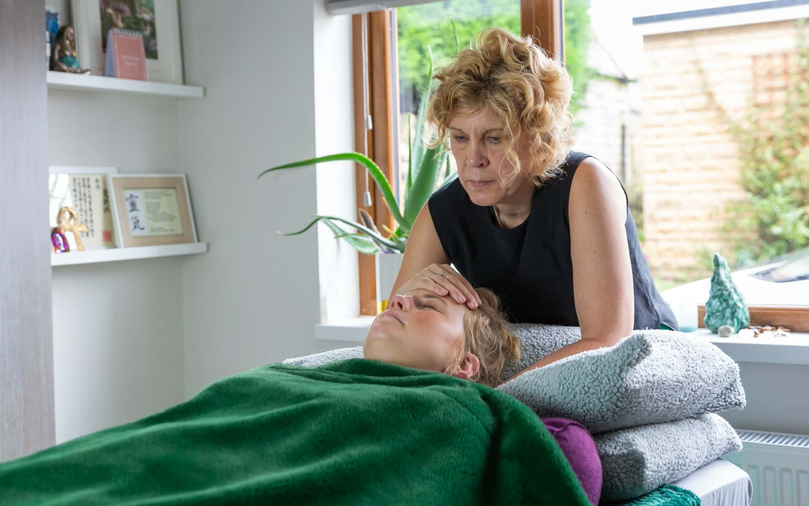

Every session is intuition-led. Janet uses crystals, tuning forks and the shamanic drum when the energy calls for them. Pricing is by feel, not a fixed list.
01
A deeply relaxing session channelling universal life energy. Crystals, tuning forks or the shamanic drum may be drawn in depending on what arises. Each session is shaped entirely by what that person needs.
Janet now uses her intuition to guide which tools she brings. No two sessions are the same.
02
A private 1:1 session combining reiki with therapeutic sound. Tuning forks calibrated to specific frequencies, crystal bowls and gong work alongside the reiki energy to release what is held and restore what has been lost.
Most people describe leaving this session feeling re-tuned.
03
Small group sessions of up to six people. Janet plays crystal singing bowls and gong, creating a soundscape the body simply surrenders into. No meditation experience needed. You lie down, close your eyes and let the sound do the work.
Maximum six per session. An intimate experience.
04
Open monthly community sessions at a local space in Cleckheaton. No booking required. No experience needed. Come and feel the power of collective resonance.
Check Facebook for upcoming dates and location.
05
Monthly drumming circles at a local community space in Cleckheaton. The drum is the oldest healing technology we know. No experience needed. Just come and be present to what arises.
Check Facebook for upcoming dates and location.

"Im also a Reiki master teacher teaching Usui reiki and this is what I love doing the most."
Janet teaches Usui Reiki at all levels. Passing on this gift and watching what happens when people receive their attunement is what drives her most. She describes it as helping people remember something that was always in them.
Many of her students go on to practise reiki themselves, several becoming practitioners in their own right and joining the wider Amethyst community.
Reach out via Facebook to discuss what session is right for you, or to check dates for the monthly groups.